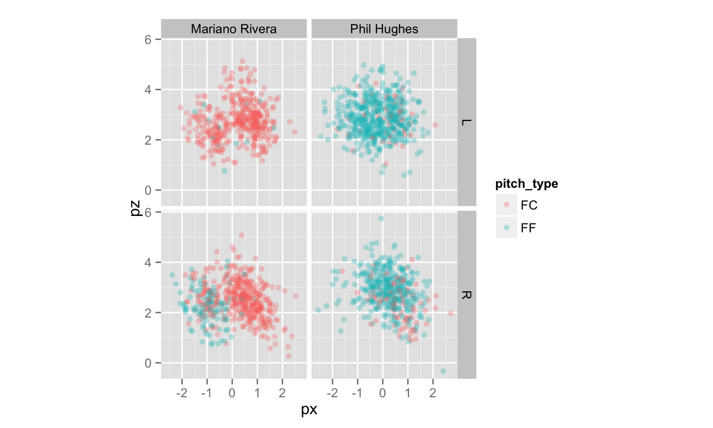
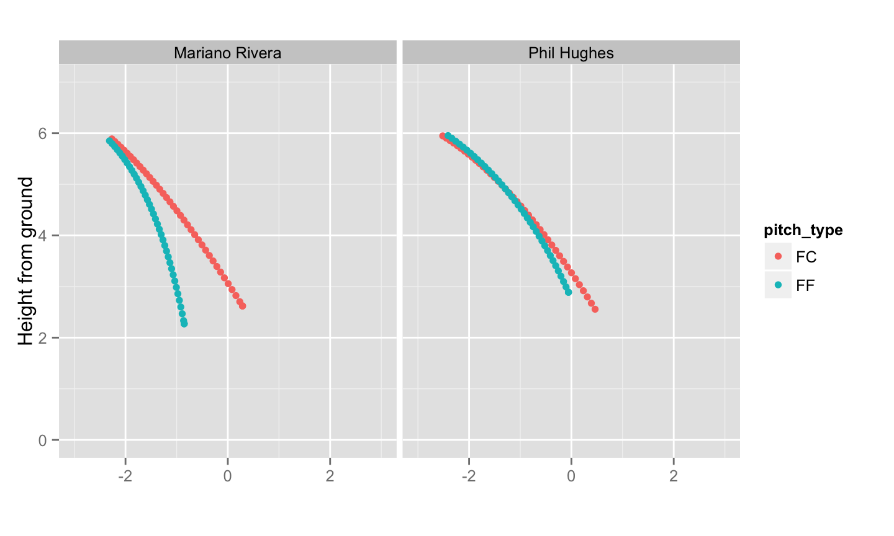

- Students propose a free and open-source software coding project to Google.
- The R project has a number of projects that you may choose from.
- A mentoring organization (e.g., the R project) evaluates applications and decides which proposals to accept.
- Of course, it helps if you know mentors (Susan and Yihui were both mentors this summer).
- Google decides how many projects to fund for each organization (the R project had 17 projects this summer)
- I highly recommend applying (even if you plan on taking the written prelim the same summer)!
September 2, 2014
Google Summer of Code
Lessons learned
- Contributing to a mature project is really hard!

Lessons learned
- Making contributions is easier when you have tests in place that ensure you haven't broken anything!

What is animint?
- R package that leverages ggplot2's grammar of graphics implementation to simplify the creation of web-based interactive graphics and animations.
- Toby Dylan Hocking is animint's maintainer
- Susan Vanderplas is an author and major contributor
- Toby Dylan Hocking is animint's maintainer


Of course, PITCHf/x data

Making copieeeessss

Strike-zone plot with ggplot2
library(pitchRx)
# load some data
data(pitches, package = "pitchRx")
# create plot
p <- ggplot() +
geom_point(alpha = 0.3, data = pitches,
aes(px, pz, color = pitch_type)) +
facet_grid(stand~pitcher_name) +
coord_equal()
# print plot
p
How does animint work?
- animint has two main components: a compiler (the R side) and a renderer (the JS side).
- The compiler extracts essential components of a built ggplot object and writes them to a JSON object.
- The renderer reads the JSON object and draws the plot.
- It turns out that ggplot objects are incredibly complex, so I built this thing to help me visualize the nested structure.
Convert your ggplots to animint plots!
animint2dirtakes a list of ggplots, creates the relevant HTML/JS files and places them in a directory that can be viewed with a browser.
library(animint) plist <- list(strike = p) animint2dir(plist, "some-directory")
- If you have a GitHub account, you can easily share with others by uploading the HTML/JS files as a gist and viewing the result via bl.ocks.org
animint2gist(plist)
- In knitr, you can embed animint plots by attaching a class of
"animint"
structure(plist, class = "animint")
Computing pitch trajectories with PITCHf/x
devtools::source_gist(id = "da555f08f3c9ba2c0b8e") locs <- getLocations(pitches, pitcher_name, pitch_type, summarise = TRUE) head(locs)
## pitcher_name pitch_type frame x y z ## 1 Mariano Rivera FC 1 -2.267 50.00 5.888 ## 2 Mariano Rivera FC 2 -2.208 48.66 5.836 ## 3 Mariano Rivera FC 3 -2.148 47.33 5.781 ## 4 Mariano Rivera FC 4 -2.088 45.99 5.725 ## 5 Mariano Rivera FC 5 -2.027 44.66 5.666 ## 6 Mariano Rivera FC 6 -1.966 43.33 5.606
framekeeps track of time since the pitcher released the ball (in thousands of a second).- As
framebecomes larger, the distance from home plate (y) becomes smaller.
p <- ggplot() + geom_point(aes(x = x, y = z, color = pitch_type, showSelected = frame),
data = locs) + facet_grid(. ~ pitcher_name) + ylim(0, 7) +
xlim(-3, 3) + coord_equal() + xlab("") + ylab("Height from ground")
p

Simple animation
- To convert this plot into an SVG-based animation, we'll group a few animint specific options and the plot itself into a list.
plist <- list(strikezone = p + theme_animint(width = 800),
# animate over frame (remember, this also a showSelected variable)
time = list(variable = "frame", ms = 100),
# use smooth transitions
duration = list(frame = 250))
Simple animation
structure(plist, class = "animint")
From animation to interaction
- We've just used the
timeoption to automatically loop through values of theshowSelectedvariableframe. - Instead of animating over time, we can use the
clickSelectsaesthetic to let the user select values via mouseclick. - When used correctly, this allows one to create visualizations that reflect the popular mantra: "Overview first, zoom and filter, then details on demand"
Overview with zoom & filter
# reusable components of a faceted strike-zone plot
ggstrike <- function() {
ggplot() + facet_grid(pitcher_name ~ stand) +
ylim(0, 7) + xlim(-3, 3) + coord_equal() + xlab("") +
ylab("")
}
# overview (not filtered by anything)
strike <- ggstrike() + theme(legend.position = "none") +
geom_point(data = pitches, aes(x = px, y = pz, color = pitch_type))
# filter by date
strike_date <- ggstrike() + geom_point(data = pitches, aes(x = px, y = pz, color = pitch_type,
showSelected = date))
Another plot is required to select dates via a mouseclick. Here we create a time series of the number of pitches thrown (by pitch_type and pitcher_name) and add transparent vertical bars that one may click on to select different dates:
# track the number of pitches per game (for each pitcher-type combination)
library(dplyr)
n_pitches <- pitches %>% group_by(pitch_type, pitcher_name, date) %>% summarise(count = n()) %>%
mutate(group = paste(pitcher_name, pitch_type, sep = ": ")) %>%
mutate(dated = as.Date(date, format = "%Y_%m_%d")) %>%
data.frame %>% mutate(max_n = max(count))
# time series plot with clickSelects
series <- ggplot() +
geom_line(aes(x = dated, y = count, colour = pitch_type,
linetype = pitcher_name, group = group), data = n_pitches) +
stat_identity(aes(x = dated, y = max_n, clickSelects = date, alpha = 0.2),
geom = "bar", data = n_pitches) + scale_alpha(guide = 'none') +
xlab("") + ylab("Number of pitches") + theme_animint(width = 800, height = 200)
plist2 <- list(strike = strike, strikeDate = strike_date, series = series)
Details on demand
- Instead of averaging pitch trajectories, let's get the trajectory of every pitch!
locs2 <- getLocations(pitches, pitcher_name, pitch_type, date, end_speed, summarise = FALSE) %>%
mutate(end_speed = paste0("End Speed: ", end_speed, " MPH"))
head(locs2)
## pitcher_name pitch_type date end_speed pitch_id frame ## 1 Mariano Rivera FC 2011_03_31 End Speed: 82.4 MPH 1 1 ## 2 Mariano Rivera FC 2011_03_31 End Speed: 82.3 MPH 2 1 ## 3 Mariano Rivera FC 2011_03_31 End Speed: 83.1 MPH 3 1 ## 4 Mariano Rivera FC 2011_03_31 End Speed: 83.6 MPH 4 1 ## 5 Mariano Rivera FC 2011_03_31 End Speed: 84.3 MPH 5 1 ## 6 Mariano Rivera FC 2011_03_31 End Speed: 83.6 MPH 6 1 ## x y z ## 1 -2.192 50 6.025 ## 2 -2.206 50 5.892 ## 3 -2.326 50 5.822 ## 4 -2.164 50 5.816 ## 5 -2.330 50 5.871 ## 6 -2.047 50 5.959
strike2 <- ggstrike() + theme(legend.position = "none") +
geom_point(data = pitches, aes(x = px, y = pz, color = pitch_type,
showSelected = date, clickSelects = pitch_id))
ani <- ggplot() +
geom_point(aes(x = x, y = z, color = pitch_type,
showSelected = pitch_id, showSelected2 = frame),
data = locs2) +
geom_text(aes(x = 0, y = 7, label = end_speed,
showSelected = pitch_id, showSelected2 = frame),
data = locs2) +
ylim(0, 7) + xlim(-3, 3) + coord_equal() + xlab("") +
ylab("Height from ground")
plist3 <- list(strike2 = strike2,
ani = ani,
series = series,
time = list(variable = "frame", ms = 100),
duration = list(frame = 250))
Thanks for coming!
- I hope you find time to play with animint!